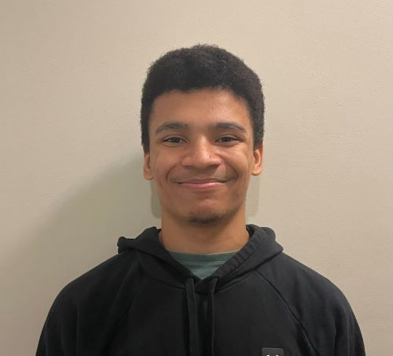

Eric Carter-Barkman's Introduction
Welcome to my introduction page
- Personal Background: Hey! My name is Eric M. Carter-Barkman, but I usually go by my middle name, Matthew. I’m 20 years old and was born in Portsmouth, Virginia. My family moved down to Charlotte shortly after and I’ve been living my life here for as long as I can remember.
- Academic Background: Currently in my sophomore year studying Computer Science at UNCC with a concentration in Web Development and Software Engineering.
- Primary Computer Platform: Windows 11
- Courses I’m Taking, & Why:
- BIOL 1110 / 1110L - Principles of Biology I: I decided to take this course because I was interested in the topic and needed the science credit for my general education requirements
- CALC 1242 - Calculus II: I have to take this as it is part of my major, and so far, it is not too bad.
- ITIS 3135 - Web-Based Application Design and Development: Another required course for my major though I am looking forward to this class to learn more about HTML and CSS.
- ITSC 3155 - Software Engineering: Required, yet interesting to me as it tackles the world of software engineering.
- ITIS 3160 - Database Design and Implementation: It’s required for my major.
- Funny/Interesting Item to Remember Me by: I like to jailbreak gaming devices for fun. Started doing it as a kid and so far I have successfully jailbroken a couple devices like the Ps Vita, PsP Go, and 3ds. There’s tons of documentation on the overall process, as well as videos, so all you really need is an old device and anybody can do it.